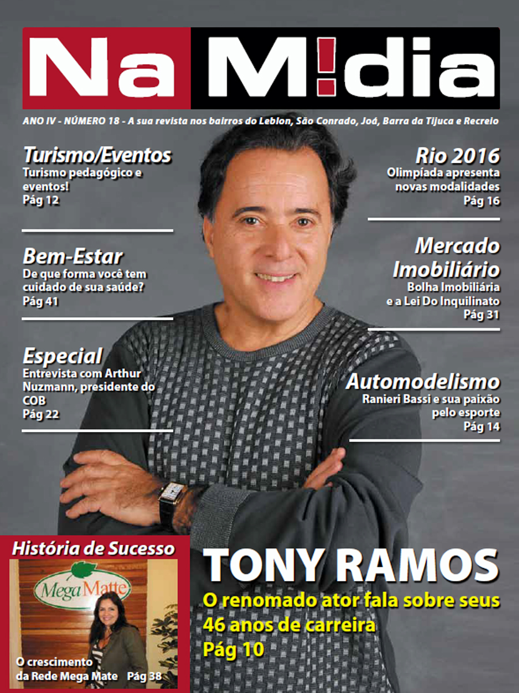
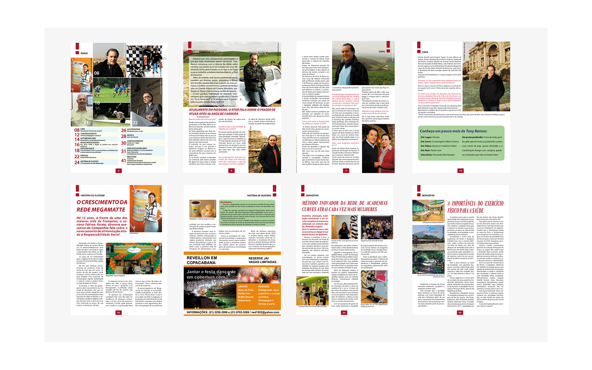
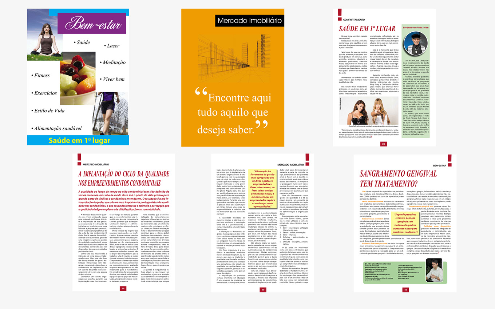

Revista NaMídia
Projeto editorial desenvolvido para organizar conteúdos, reportagens e anúncios em uma publicação visualmente clara, atrativa e consistente.

Visão geral
A Revista NaMídia foi desenvolvida como um projeto editorial voltado à apresentação de reportagens, entrevistas, informações e conteúdos publicitários em uma publicação organizada e visualmente consistente.
O desafio
O principal desafio foi distribuir diferentes tipos de conteúdo em uma estrutura editorial equilibrada, garantindo boa leitura, hierarquia das informações e unidade visual entre as páginas.
Soluções desenvolvidas
- Criação de grid para organização das páginas.
- Definição de hierarquia entre títulos, textos e imagens.
- Padronização visual das seções editoriais.
- Tratamento e enquadramento de imagens.
- Integração equilibrada entre conteúdo editorial e anúncios.
- Preparação dos arquivos para produção gráfica.
Organização editorial
O projeto foi estruturado para organizar diferentes tipos de conteúdo dentro de uma linguagem editorial consistente. A distribuição dos textos, imagens, títulos e elementos gráficos foi planejada para facilitar a leitura e valorizar cada matéria.
- Definição da estrutura visual das páginas.
- Criação de hierarquia para títulos, subtítulos e textos.
- Organização equilibrada entre conteúdo textual e imagens.
- Desenvolvimento de páginas com composições variadas.
- Padronização de margens, alinhamentos e espaçamentos.
- Manutenção da unidade visual entre as diferentes matérias.
Processo de diagramação
A diagramação começou com a análise do conteúdo disponível e a definição da importância de cada informação. A partir disso, foram desenvolvidas composições que preservam a identidade da publicação, mantendo legibilidade, ritmo visual e clareza na apresentação.
- Análise e separação dos conteúdos editoriais.
- Definição das grades e áreas de composição.
- Escolha da hierarquia tipográfica.
- Tratamento e posicionamento das imagens.
- Revisão da legibilidade e do equilíbrio visual.
- Preparação das páginas para apresentação e publicação.
Composição e identidade da publicação
A revista foi desenvolvida com uma estrutura editorial consistente, combinando hierarquia tipográfica, imagens e diferentes composições para valorizar o conteúdo e facilitar a leitura.



Tecnologias e competências
Principais aprendizados
Durante o projeto, aprofundei meus conhecimentos em organização editorial, hierarquia visual, composição de páginas, tratamento de imagens e preparação de materiais para impressão.